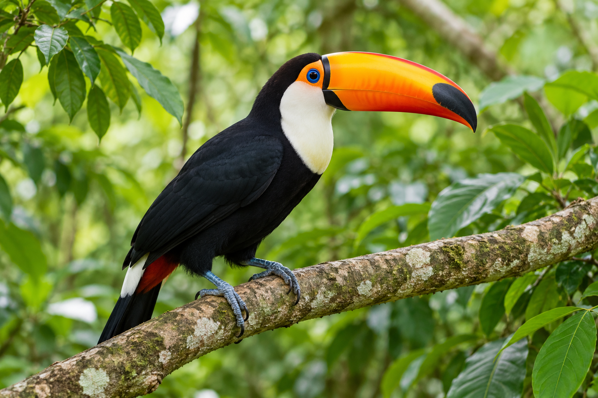

Sobre a WebZoo
O WebZoo é uma plataforma de educação ambiental do Zoológico de São Paulo. Seu objetivo é apresentar animais e seus ambientes, compartilhar curiosidades e incentivar o cuidado com a natureza.
Principais Animais

Onça Pintada
A onça-pintada é um felino de pelagem marcada por manchas. É carnívora e pode ser encontrada em ambientes como florestas e áreas do Pantanal.

Tucano-Toco
O tucano-toco é uma ave conhecida pelo bico grande e colorido. Alimenta-se de frutos e também de pequenos animais. Pode ser encontrado em áreas como o Cerrado.

Capivara
A capivara é um roedor que vive em grupos e costuma permanecer perto de rios e lagos. É herbívora e se alimenta de plantas.